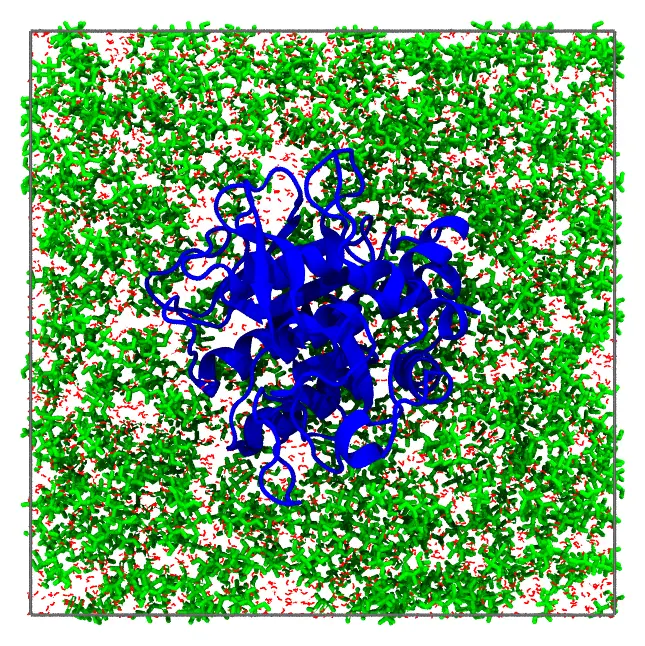

Protein in glycerol and water
A protein solvated by a mixture of glycerol and water, 50% in mass, in a periodic box: a system of the ComplexMixtures.jl examples, where the solvation of the protein by each component of the mixture is studied. The protein is fixed at the center of the box, and the mixture fills the rest of it.

The protein, glycerol (green) and water (red), in the half of the box behind the protein, with the edges of the periodic box.
Files: protein.pdb, glycerol.pdb, water.pdb, and the input file protein_glycerol.inp.
The numbers of molecules
The box is a cube with sides of 76 Å, which leaves at least 12 Å of solvent around the protein (its largest dimension is 51 Å). The mixture of glycerol (92.09 g/mol) and water (18.02 g/mol), 50% in mass, has a density of 1.126 g/mL. In 1 g of it there are 0.5/92.09 mol of glycerol and 0.5/18.02 mol of water, so its number densities are:
- glycerol: 1.126 × (0.5/92.09) × 0.6022 = 0.00368 molecules per ų;
- water: 1.126 × (0.5/18.02) × 0.6022 = 0.01882 molecules per ų.
The protein (27.3 kDa) occupies about 27300/(1.35 × 0.6022) = 33600 ų (the density of proteins is about 1.35 g/mL), so the solution has 76³ − 33600 = 405400 ų: 1493 molecules of glycerol and 7630 of water.
The SolutionBoxUSC recipe (see Recipes) computes these numbers from the density of the mixture as a function of its concentration, given as a table, in any concentration unit.
Command line
The input file:
#
# A protein in a mixture of glycerol and water, 50% in mass (1.126 g/mL),
# in a periodic cubic box with sides of 76 Å.
#
tolerance 2.0
output protein_glycerol.pdb
pbc -38. -38. -38. 38. 38. 38.
# The protein, fixed with its center at the center of the box
structure protein.pdb
number 1
center
fixed 0. 0. 0. 0. 0. 0.
end structure
structure glycerol.pdb
number 1493
end structure
structure water.pdb
number 7630
end structureThe periodic box confines the molecules of the solvent, so they need no constraint. The protein is fixed with its geometric center (center) at the center of the box: all its atoms must be inside the periodic box (see Fixed molecules).
Check the initial approximation first
Add the check keyword to the input file, and run it as below. Packmol builds only the initial approximation, in a fraction of a second, and writes it to the output file (protein_glycerol.pdb): look at it to see that the protein is at the center of the box, and the solvent around it. Then remove check, and run the packing.
Packing
packmol protein_glycerol.inpThe packing (about 48 thousand atoms) takes about 2 seconds.
Julia
using Packmolprotein = structure_type("protein.pdb"; number = 1, fixed = ([0., 0., 0.], [0., 0., 0.]), center = :geometric,)glycerol = structure_type("glycerol.pdb"; number = 1493)water = structure_type("water.pdb"; number = 7630)system = PackmolSystem([protein, glycerol, water]; output = "protein_glycerol.pdb", tolerance = 2.0, unitcell = [76. 0. 0.; 0. 76. 0.; 0. 0. 76.], # centered at the origin)packmol(system)As with the input file, check the initial approximation first, with PackmolSystem(...; check = true).